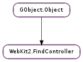

| count_matches(search_text, find_options, max_match_count) | |
| get_max_match_count() | |
| get_options() | |
| get_search_text() | |
| get_web_view() | |
| search(search_text, find_options, max_match_count) | |
| search_finish() | |
| search_next() | |
| search_previous() |
| Name | Type | Flags | Description |
|---|---|---|---|
| max-match-count | int | r | The maximum number of matches in a given text to report |
| options | WebKit2.FindOptions | r | Search options to be used in the search operation |
| text | str | r | Text to search for in the view |
| web-view | WebKit2.WebView | r/w/c | The WebView associated with this find controller |
| Name | Parameters | Return | Description |
|---|---|---|---|
| counted-matches | int | This signal is emitted when the WebKit2.FindController has counted the number of matches for a given text after a call to WebKit2.FindController.count_matches (). | |
| failed-to-find-text | This signal is emitted when a search operation does not find any result for the given text. It will be issued if the text is not found asynchronously after a call to WebKit2.FindController.search (), WebKit2.FindController.search_next () or WebKit2.FindController.search_previous (). | ||
| found-text | int | This signal is emitted when a given text is found in the web page text. It will be issued if the text is found asynchronously after a call to WebKit2.FindController.search (), WebKit2.FindController.search_next () or WebKit2.FindController.search_previous (). |
| Name | Type | Access |
|---|---|---|
| parent | GObject.Object | r |
Bases: GObject.Object
| Parameters: |
|
|---|
Counts the number of matches for search_text found in the WebKit2.WebView with the provided find_options. The number of matches will be provided by the WebKit2.FindController ::counted-matches signal.
| Returns: | the maximum number of matches to report. |
|---|---|
| Return type: | int |
Gets the maximum number of matches to report during a text lookup. This number is passed as the last argument of WebKit2.FindController.search () or WebKit2.FindController.count_matches ().
| Returns: | a bitmask containing the WebKit2.FindOptions associated with the current search. |
|---|---|
| Return type: | int |
Gets a bitmask containing the WebKit2.FindOptions associated with the current search.
| Returns: | the text to look for in the WebKit2.WebView. |
|---|---|
| Return type: | str |
Gets the text that find_controller is currently searching for. This text is passed to either WebKit2.FindController.search () or WebKit2.FindController.count_matches ().
| Returns: | the WebKit2.WebView. |
|---|---|
| Return type: | WebKit2.WebView |
Gets the WebKit2.WebView this find controller is associated to. Do not unref the returned instance as it belongs to the WebKit2.FindController.
| Parameters: |
|
|---|
Looks for search_text in the WebKit2.WebView associated with find_controller since the beginning of the document highlighting up to max_match_count matches. The outcome of the search will be asynchronously provided by the WebKit2.FindController ::found-text and WebKit2.FindController ::failed-to-find-text signals.
To look for the next or previous occurrences of the same text with the same find options use WebKit2.FindController.search_next () and/or WebKit2.FindController.search_previous (). The WebKit2.FindController will use the same text and options for the following searches unless they are modified by another call to this method.
Note that if the number of matches is higher than max_match_count then WebKit2.FindController ::found-text will report GObject.G_MAXUINT matches instead of the actual number.
Callers should call WebKit2.FindController.search_finish () to finish the current search operation.
Finishes a find operation started by WebKit2.FindController.search (). It will basically unhighlight every text match found.
This method will be typically called when the search UI is closed/hidden by the client application.
Looks for the next occurrence of the search text.
Calling this method before WebKit2.FindController.search () or WebKit2.FindController.count_matches () is a programming error.
Looks for the previous occurrence of the search text.
Calling this method before WebKit2.FindController.search () or WebKit2.FindController.count_matches () is a programming error.